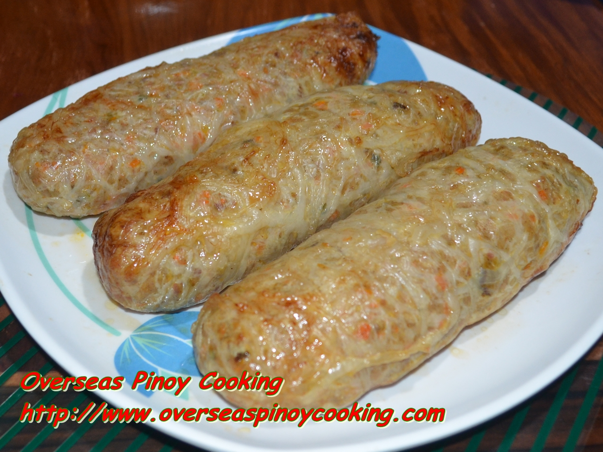

Embutido Recipe

Embutido is a Filipino-style meatloaf made with a festive mixture of ground pork, carrots, and thin pork skin wrapped around slices of hardboiled eggs and potatoes. Steamed and fried to perfection, they're great for everyday dinner meals as well as special occasions. It can also make as a great main dish for anytime of the day. It can also give you a mixture of nutrients to your body. It is also simple to make.
Ingredients:
- Vegetable Oil
- Panyo-panyo ng baboy or Thin pig skin
- Carrots
- Potatoes
- Grind meat
- Hardboiled Egg
- Salt
- Blackpepper
Recipe:
- Season your Grind meat using Salt,vetsin and Blackpepper.
- Boil your Carrots,Potaoes, and your Eggs.
- After Boil, Dice those Ingredients.
- Spread you Panyo-panyo forming a Cylindrical shape.
- Add the ingriedeince evenly to the Panyo-panyo.
- Steam your Embutido for 30 Minutes
- Then lastly Fry your Embutido till Golden Brown.
- Enjoy the meal.